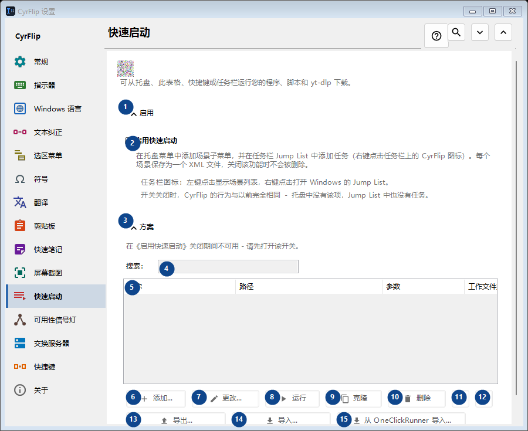
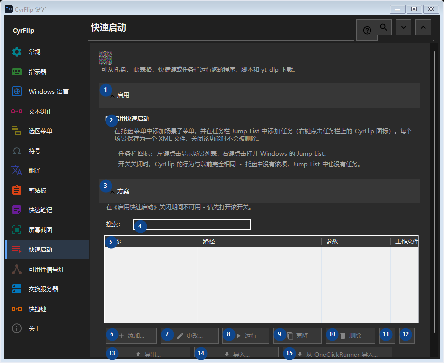

快速启动
用途
可从托盘、此表格、快捷键或任务栏运行您的程序、脚本和 yt-dlp 下载。


使用顺序
设置立即生效，无须按固定顺序操作；请使用以下分组。
界面元素
1. 启用
需要执行上述操作时使用此命令。接受前请阅读确认提示。
你的快捷键2. 启用快速启动
在托盘菜单中添加场景子菜单，并在任务栏 Jump List 中添加任务（右键点击任务栏上的 CyrFlip 图标）。每个场景保存为一个 XML 文件，关闭该功能时不会被删除。
你的快捷键3. 方案
需要执行上述操作时使用此命令。接受前请阅读确认提示。
你的快捷键4. 搜索：
在《启用快速启动》关闭期间不可用 - 请先打开该开关。 此控件当前不可用。请先启用相应功能或选择条目。
你的快捷键5. 快速启动
在《启用快速启动》关闭期间不可用 - 请先打开该开关。 此控件当前不可用。请先启用相应功能或选择条目。 名称 / 路径 / 参数 / 工作文件夹 / 管理员 / 快捷键
你的快捷键6. 添加...
在《启用快速启动》关闭期间不可用 - 请先打开该开关。 此控件当前不可用。请先启用相应功能或选择条目。
你的快捷键7. 更改...
在《启用快速启动》关闭期间不可用 - 请先打开该开关。 此控件当前不可用。请先启用相应功能或选择条目。
你的快捷键8. 运行
在《启用快速启动》关闭期间不可用 - 请先打开该开关。 此控件当前不可用。请先启用相应功能或选择条目。
你的快捷键9. 克隆
在《启用快速启动》关闭期间不可用 - 请先打开该开关。 此控件当前不可用。请先启用相应功能或选择条目。
你的快捷键10. 删除
在《启用快速启动》关闭期间不可用 - 请先打开该开关。 此控件当前不可用。请先启用相应功能或选择条目。
你的快捷键11. 上移
在《启用快速启动》关闭期间不可用 - 请先打开该开关。 此控件当前不可用。请先启用相应功能或选择条目。
你的快捷键12. 下移
在《启用快速启动》关闭期间不可用 - 请先打开该开关。 此控件当前不可用。请先启用相应功能或选择条目。
你的快捷键13. 导出...
在《启用快速启动》关闭期间不可用 - 请先打开该开关。 此控件当前不可用。请先启用相应功能或选择条目。
你的快捷键14. 导入...
在《启用快速启动》关闭期间不可用 - 请先打开该开关。 此控件当前不可用。请先启用相应功能或选择条目。
你的快捷键15. 从 OneClickRunner 导入...
在《启用快速启动》关闭期间不可用 - 请先打开该开关。 此控件当前不可用。请先启用相应功能或选择条目。
你的快捷键